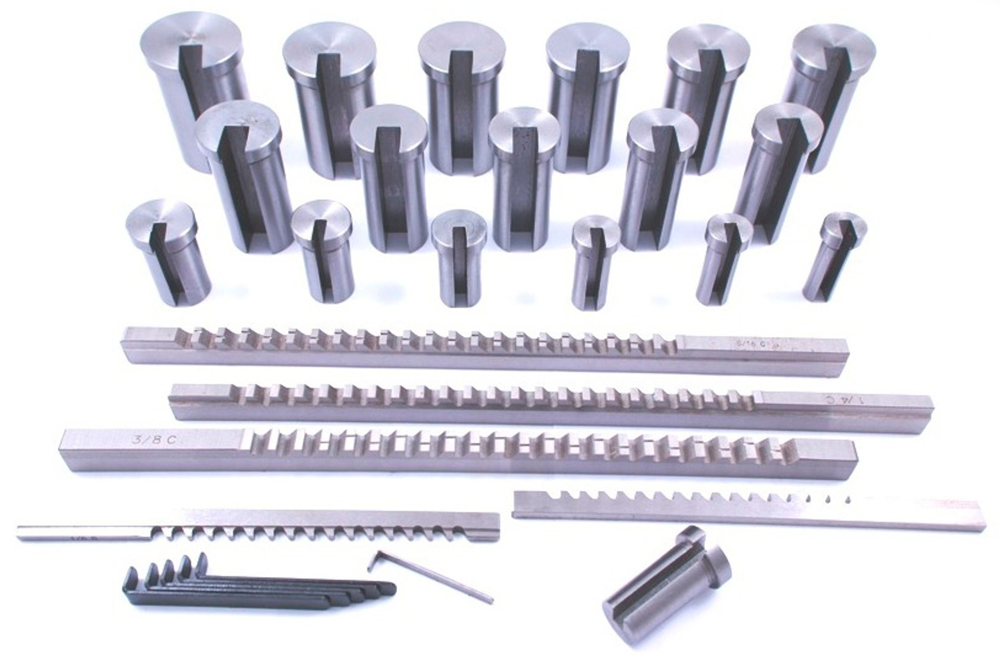
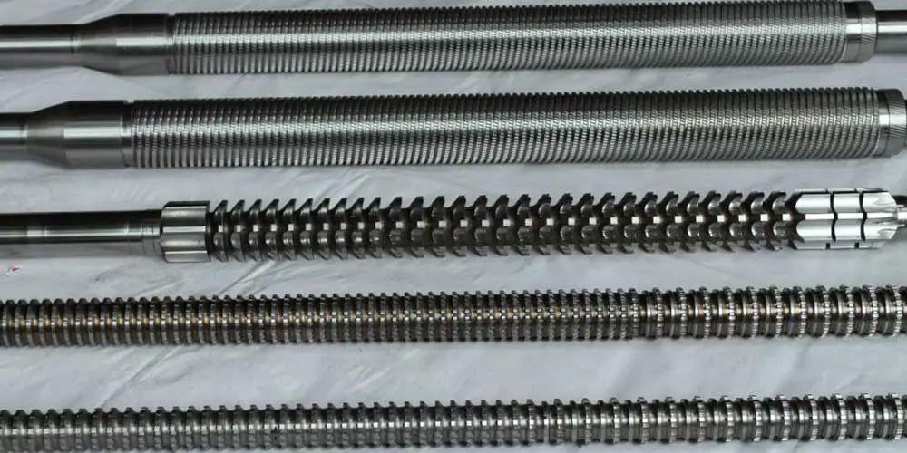

Broach tools
Keyway Broaches
For accurately broaching keyways in bores.
Reliable broach tools and PTO shaft yokes, manufactured with a focus on precision, durability and the needs of your application.
We manufacture broaching tools and engineering components for customers who value accuracy and dependable performance. Our team works with you to understand the job and recommend a suitable solution.
From standard product requirements to custom specifications, we bring hands-on manufacturing experience to every enquiry.
Explore a selection from our broach tooling and PTO shaft yoke range. Contact us to discuss sizes, specifications and availability.

For accurately broaching keyways in bores.

Involute and straight spline tooling.

For external flat and contoured surfaces.

Yoke options for PTO shaft applications.
We focus on dependable materials, careful manufacturing and inspection throughout the process.
We work to understand your component and requirements before recommending a tooling solution.
Our manufacturing approach is built around accuracy, repeatability and reliable performance.
Star Engineering Tools is ISO 9001:2015 and MSME ZED certified.
Our tooling and components support a variety of engineering and manufacturing applications.
Share your drawing, specification or product enquiry with our team.